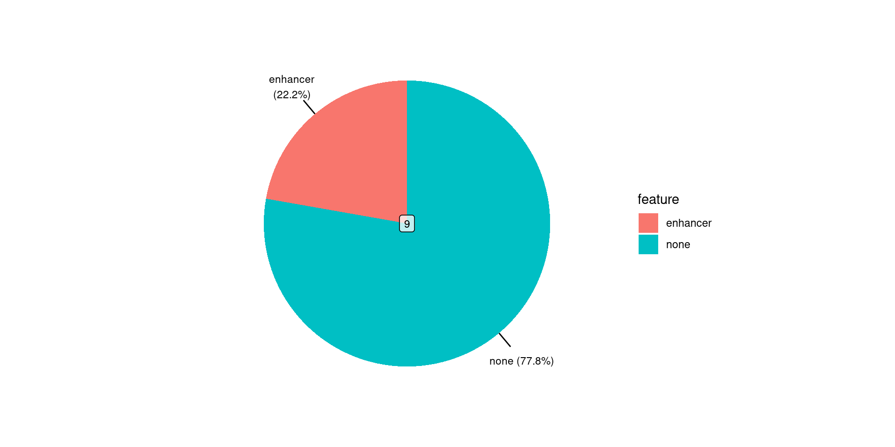
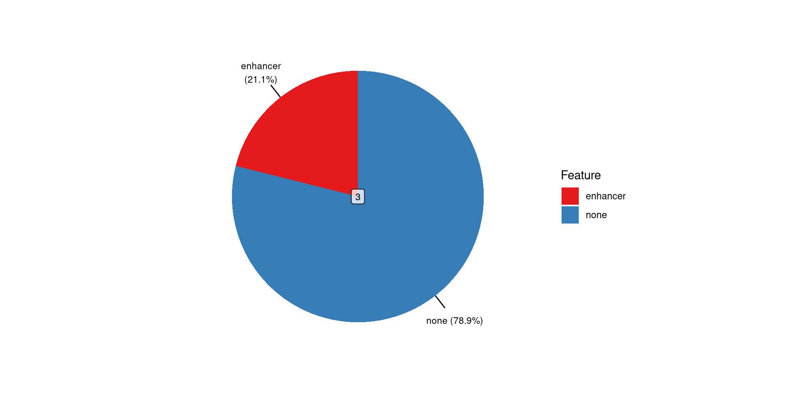

Using extraChIPs with GRAVI
Hot mess or slick analysis?
Stephen (Stevie) Pederson
BiocAsia
2022-12-01
Introduction
Who Am I?
- Post-doctoral Bioinformatician (ECR)
- Black Ochre Data Laboratories

- Based in Adelaide, South Australia
- Traditional lands of the Kaurna people
- Black Ochre Data Laboratories

- Author/Maintainer of
ngsReports
- Parse & plot
FastQC,cutadapt,STAR,macs2etc.
- Parse & plot

GRAVI
- 2020 - 2022: Dame Roma Mitchell Cancer Research Laboratories (DRMCRL)
- Activation of the Androgen Receptor (AR) as a therapeutic strategy for Breast Cancer (Hickey et al. 2021)
- Combined genomic changes to AR, ER & GATA3 binding after DHT-treatment (ChIP-Seq)
- 4 cell lines + 2 PDX model
- Additional Histone Marks
- Additional HiC / HiChIP Data (Sometimes)
- RNA Seq data
GRAVI
- Gene Regulatory Analysis using Variable Inputs (https://github.com/steveped/GRAVI)
- snakemake workflow
- HTML Output inspired by
workflowr(Blischak, Carbonetto, and Stephens 2019) - All code visible \(\implies\) Reproducible as complete or in sections
- Standardised all output formats/structures
- HTML Output inspired by
GRAVI
- Minimal Data:
- 1 ChIP Target across two conditions
- Best for 2-3 ChIP targets with 2-3 conditions
- Enables Pair-wise Comparisons
- Optional Data: RNA-Seq Results, HiC Interactions, Genomic Features (H3K27ac)
extraChIPs
GRAVI
extraChIPswas developed as key infrastructure for GRAVI- 3 Primary sets of Functions
- Working with
GRangesfocussed onmcols() - ChIP-Seq Helper Functions (i.e. peaks and differential binding)
- Data Visualisation
- Working with
Working With Ranges: tibble Coercion
## S3 method for class 'DataFrame'
as_tibble(x, rangeAsChar = TRUE, ...)
## S3 method for class 'GenomicRanges'
as_tibble(x, rangeAsChar = TRUE, name = "range", ...)
## S3 method for class 'Seqinfo'
as_tibble(x, ...)
## S3 method for class 'GInteractions'
as_tibble(x, rangeAsChar = TRUE, suffix = c(".x", ".y"), ...)- Defined for
GRanges,DataFrame,SeqinfoandGInteractionsclasses - Handles
S4Compressed list columns well (so far)- Uses
vctrs::vec_proxy()to coerce to S3 lists
- Uses
Working With Ranges: tibble Coercion
Starting with the protein-coding transcripts for CTLA4
GRanges object with 4 ranges and 2 metadata columns:
seqnames ranges strand | gene_name transcript_name
<Rle> <IRanges> <Rle> | <character> <character>
[1] chr2 204732494-204738688 + | CTLA4 CTLA4-205
[2] chr2 204732666-204737498 + | CTLA4 CTLA4-201
[3] chr2 204732666-204737535 + | CTLA4 CTLA4-204
[4] chr2 204732666-204737535 + | CTLA4 CTLA4-203
-------
seqinfo: 24 sequences from GRCh37 genomeWorking With Ranges: tibble Coercion
Now perform the coercion using as_tibble()
# A tibble: 4 × 3
range gene_name transcript_name
<chr> <chr> <chr>
1 chr2:204732494-204738688:+ CTLA4 CTLA4-205
2 chr2:204732666-204737498:+ CTLA4 CTLA4-201
3 chr2:204732666-204737535:+ CTLA4 CTLA4-204
4 chr2:204732666-204737535:+ CTLA4 CTLA4-203 Coerce back to a GRanges uses colToRanges()
GRanges object with 4 ranges and 2 metadata columns:
seqnames ranges strand | gene_name transcript_name
<Rle> <IRanges> <Rle> | <character> <character>
[1] chr2 204732494-204738688 + | CTLA4 CTLA4-205
[2] chr2 204732666-204737498 + | CTLA4 CTLA4-201
[3] chr2 204732666-204737535 + | CTLA4 CTLA4-204
[4] chr2 204732666-204737535 + | CTLA4 CTLA4-203
-------
seqinfo: 24 sequences from GRCh37 genomeOperations Retaining mcols: reduceMC()
GRanges object with 4 ranges and 2 metadata columns:
seqnames ranges strand | gene_name transcript_name
<Rle> <IRanges> <Rle> | <character> <character>
[1] chr2 204732494-204738688 + | CTLA4 CTLA4-205
[2] chr2 204732666-204737498 + | CTLA4 CTLA4-201
[3] chr2 204732666-204737535 + | CTLA4 CTLA4-204
[4] chr2 204732666-204737535 + | CTLA4 CTLA4-203
-------
seqinfo: 24 sequences from GRCh37 genomeCommon functions like reduce lose mcols information
Operations Retaining mcols: reduceMC()
GRanges object with 4 ranges and 2 metadata columns:
seqnames ranges strand | gene_name transcript_name
<Rle> <IRanges> <Rle> | <character> <character>
[1] chr2 204732494-204738688 + | CTLA4 CTLA4-205
[2] chr2 204732666-204737498 + | CTLA4 CTLA4-201
[3] chr2 204732666-204737535 + | CTLA4 CTLA4-204
[4] chr2 204732666-204737535 + | CTLA4 CTLA4-203
-------
seqinfo: 24 sequences from GRCh37 genomereduceMC() collapses the mcols information
Operations Retaining mcols: reduceMC()
More realistically we might want to find unique TSS within a gene
GRanges object with 2 ranges and 2 metadata columns:
seqnames ranges strand | gene_name transcript_name
<Rle> <IRanges> <Rle> | <character> <CharacterList>
[1] chr2 204732494 + | CTLA4 CTLA4-205
[2] chr2 204732666 + | CTLA4 CTLA4-201,CTLA4-204,CTLA4-203
-------
seqinfo: 24 sequences from GRCh37 genomeSet Operations Retaining mcols
- Set operations have
*MC()versions setdiff()VssetdiffMC()unionVsunionMC()intersectVsintersectMC()
mcols are only retained from the query range (i.e. x in setdiffMC(x, y))
Tidyverse-inspired Functions: chopMC()
GRanges object with 4 ranges and 2 metadata columns:
seqnames ranges strand | gene_name transcript_name
<Rle> <IRanges> <Rle> | <character> <character>
[1] chr2 204732494-204738688 + | CTLA4 CTLA4-205
[2] chr2 204732666-204737498 + | CTLA4 CTLA4-201
[3] chr2 204732666-204737535 + | CTLA4 CTLA4-204
[4] chr2 204732666-204737535 + | CTLA4 CTLA4-203
-------
seqinfo: 24 sequences from GRCh37 genomechopMC()acts likechop()using the range as the backbone
GRanges object with 3 ranges and 2 metadata columns:
seqnames ranges strand | gene_name transcript_name
<Rle> <IRanges> <Rle> | <character> <CharacterList>
[1] chr2 204732494-204738688 + | CTLA4 CTLA4-205
[2] chr2 204732666-204737498 + | CTLA4 CTLA4-201
[3] chr2 204732666-204737535 + | CTLA4 CTLA4-204,CTLA4-203
-------
seqinfo: 1 sequence from an unspecified genome; no seqlengthsTidyverse-inspired Functions: distinctMC()
GRanges object with 4 ranges and 2 metadata columns:
seqnames ranges strand | gene_name transcript_name
<Rle> <IRanges> <Rle> | <character> <character>
[1] chr2 204732494-204738688 + | CTLA4 CTLA4-205
[2] chr2 204732666-204737498 + | CTLA4 CTLA4-201
[3] chr2 204732666-204737535 + | CTLA4 CTLA4-204
[4] chr2 204732666-204737535 + | CTLA4 CTLA4-203
-------
seqinfo: 24 sequences from GRCh37 genomedistinctMC()behaves likedistinct()using the ranges + any requested columns
Tidyverse-inspired Functions: distinctMC()
GRanges object with 4 ranges and 2 metadata columns:
seqnames ranges strand | gene_name transcript_name
<Rle> <IRanges> <Rle> | <character> <character>
[1] chr2 204732494-204738688 + | CTLA4 CTLA4-205
[2] chr2 204732666-204737498 + | CTLA4 CTLA4-201
[3] chr2 204732666-204737535 + | CTLA4 CTLA4-204
[4] chr2 204732666-204737535 + | CTLA4 CTLA4-203
-------
seqinfo: 24 sequences from GRCh37 genomedistinctMC()behaves likedistinct()using the ranges + any requested columns
GRanges object with 3 ranges and 2 metadata columns:
seqnames ranges strand | gene_name transcript_name
<Rle> <IRanges> <Rle> | <character> <character>
[1] chr2 204732494-204738688 + | CTLA4 CTLA4-205
[2] chr2 204732666-204737498 + | CTLA4 CTLA4-201
[3] chr2 204732666-204737535 + | CTLA4 CTLA4-204
-------
seqinfo: 24 sequences from GRCh37 genomeAdditional Helpers
stitchRanges() joins ranges setting barriers
GRanges object with 3 ranges and 0 metadata columns:
seqnames ranges strand
<Rle> <IRanges> <Rle>
[1] chr1 1-10 *
[2] chr1 101-110 *
[3] chr1 201-210 *
-------
seqinfo: 1 sequence from an unspecified genome; no seqlengthsWorking with Peaks
importPeaks()
Most often, we’ll load in replicates with identical structure \(\implies\) GRangesList
library(glue)
fl <- glue("GATA3_E2_rep{1:2}.narrowPeak")
peaks <- importPeaks(fl, seqinfo = sq)
peaksGRangesList object of length 2:
$GATA3_E2_rep1.narrowPeak
GRanges object with 10 ranges and 5 metadata columns:
seqnames ranges strand | score
<Rle> <IRanges> <Rle> | <numeric>
ZR-75-1_GATA3_E2_1_peak_1 chr1 523658-523929 * | 174
ZR-75-1_GATA3_E2_1_peak_2 chr1 780928-781330 * | 373
ZR-75-1_GATA3_E2_1_peak_3 chr1 821067-821391 * | 71
ZR-75-1_GATA3_E2_1_peak_4 chr1 849166-849528 * | 232
ZR-75-1_GATA3_E2_1_peak_5 chr1 852773-852955 * | 112
ZR-75-1_GATA3_E2_1_peak_6 chr1 1707118-1707445 * | 170
ZR-75-1_GATA3_E2_1_peak_7 chr1 1790623-1790995 * | 175
ZR-75-1_GATA3_E2_1_peak_8 chr1 1800979-1801188 * | 70
ZR-75-1_GATA3_E2_1_peak_9 chr1 1814836-1815115 * | 80
ZR-75-1_GATA3_E2_1_peak_10 chr1 1933329-1933586 * | 117
signalValue pValue qValue peak
<numeric> <numeric> <numeric> <numeric>
ZR-75-1_GATA3_E2_1_peak_1 7.90069 20.38453 17.44608 134
ZR-75-1_GATA3_E2_1_peak_2 12.49110 40.68121 37.35409 209
ZR-75-1_GATA3_E2_1_peak_3 4.24703 9.79599 7.18429 157
ZR-75-1_GATA3_E2_1_peak_4 12.30190 26.35153 23.27520 189
ZR-75-1_GATA3_E2_1_peak_5 7.84787 13.98412 11.22576 118
ZR-75-1_GATA3_E2_1_peak_6 10.07489 19.93628 17.00446 168
ZR-75-1_GATA3_E2_1_peak_7 9.65966 20.51598 17.57464 200
ZR-75-1_GATA3_E2_1_peak_8 6.36320 9.63799 7.02867 97
ZR-75-1_GATA3_E2_1_peak_9 6.73437 10.68456 8.03742 151
ZR-75-1_GATA3_E2_1_peak_10 6.37055 14.51252 11.73312 133
-------
seqinfo: 24 sequences from GRCh37 genome
$GATA3_E2_rep2.narrowPeak
GRanges object with 10 ranges and 5 metadata columns:
seqnames ranges strand | score
<Rle> <IRanges> <Rle> | <numeric>
ZR-75-1_GATA3_E2_2_peak_1 chr1 523672-523939 * | 73
ZR-75-1_GATA3_E2_2_peak_2 chr1 780837-781294 * | 310
ZR-75-1_GATA3_E2_2_peak_3 chr1 821066-821346 * | 17
ZR-75-1_GATA3_E2_2_peak_4 chr1 849167-849522 * | 352
ZR-75-1_GATA3_E2_2_peak_5 chr1 1707074-1707325 * | 32
ZR-75-1_GATA3_E2_2_peak_6 chr1 1790623-1791019 * | 173
ZR-75-1_GATA3_E2_2_peak_7 chr1 1800936-1801227 * | 121
ZR-75-1_GATA3_E2_2_peak_8 chr1 1814913-1815157 * | 121
ZR-75-1_GATA3_E2_2_peak_9 chr1 1933372-1933563 * | 42
ZR-75-1_GATA3_E2_2_peak_10 chr1 2462419-2462660 * | 65
signalValue pValue qValue peak
<numeric> <numeric> <numeric> <numeric>
ZR-75-1_GATA3_E2_2_peak_1 5.12315 10.08017 7.30926 136
ZR-75-1_GATA3_E2_2_peak_2 14.67066 34.47041 31.01986 308
ZR-75-1_GATA3_E2_2_peak_3 2.82475 4.16110 1.76187 148
ZR-75-1_GATA3_E2_2_peak_4 15.79546 38.73673 35.20665 176
ZR-75-1_GATA3_E2_2_peak_5 4.54744 5.74956 3.22346 143
ZR-75-1_GATA3_E2_2_peak_6 9.75019 20.46024 17.32872 232
ZR-75-1_GATA3_E2_2_peak_7 8.29678 15.09020 12.11843 168
ZR-75-1_GATA3_E2_2_peak_8 8.29678 15.09020 12.11843 146
ZR-75-1_GATA3_E2_2_peak_9 4.23712 6.90630 4.29843 90
ZR-75-1_GATA3_E2_2_peak_10 4.90164 9.25272 6.52910 112
-------
seqinfo: 24 sequences from GRCh37 genomeplotOverlaps()
plotOverlaps()
makeConsensus()
GRanges object with 11 ranges and 3 metadata columns:
seqnames ranges strand | GATA3_E2_rep1 GATA3_E2_rep2 n
<Rle> <IRanges> <Rle> | <logical> <logical> <numeric>
[1] chr1 523658-523939 * | TRUE TRUE 2
[2] chr1 780837-781330 * | TRUE TRUE 2
[3] chr1 821066-821391 * | TRUE TRUE 2
[4] chr1 849166-849528 * | TRUE TRUE 2
[5] chr1 852773-852955 * | TRUE FALSE 1
[6] chr1 1707074-1707445 * | TRUE TRUE 2
[7] chr1 1790623-1791019 * | TRUE TRUE 2
[8] chr1 1800936-1801227 * | TRUE TRUE 2
[9] chr1 1814836-1815157 * | TRUE TRUE 2
[10] chr1 1933329-1933586 * | TRUE TRUE 2
[11] chr1 2462419-2462660 * | FALSE TRUE 1
-------
seqinfo: 24 sequences from GRCh37 genomemakeConsensus()
Retain one or more columns from each replicate
GRanges object with 11 ranges and 4 metadata columns:
seqnames ranges strand | score GATA3_E2_rep1
<Rle> <IRanges> <Rle> | <NumericList> <logical>
[1] chr1 523658-523939 * | 174, 73 TRUE
[2] chr1 780837-781330 * | 373,310 TRUE
[3] chr1 821066-821391 * | 71,17 TRUE
[4] chr1 849166-849528 * | 232,352 TRUE
[5] chr1 852773-852955 * | 112 TRUE
[6] chr1 1707074-1707445 * | 170, 32 TRUE
[7] chr1 1790623-1791019 * | 175,173 TRUE
[8] chr1 1800936-1801227 * | 70,121 TRUE
[9] chr1 1814836-1815157 * | 80,121 TRUE
[10] chr1 1933329-1933586 * | 117, 42 TRUE
[11] chr1 2462419-2462660 * | 65 FALSE
GATA3_E2_rep2 n
<logical> <numeric>
[1] TRUE 2
[2] TRUE 2
[3] TRUE 2
[4] TRUE 2
[5] FALSE 1
[6] TRUE 2
[7] TRUE 2
[8] TRUE 2
[9] TRUE 2
[10] TRUE 2
[11] TRUE 1
-------
seqinfo: 24 sequences from GRCh37 genomemakeConsensus()
Example: Keep peak centres from each replicate
library(plyranges)
peaks %>%
endoapply(mutate, centre = start + peak) %>%
makeConsensus(var = "centre", p = 1, simplify = FALSE) GRanges object with 9 ranges and 4 metadata columns:
seqnames ranges strand | centre GATA3_E2_rep1
<Rle> <IRanges> <Rle> | <NumericList> <logical>
[1] chr1 523658-523939 * | 523792,523808 TRUE
[2] chr1 780837-781330 * | 781137,781145 TRUE
[3] chr1 821066-821391 * | 821224,821214 TRUE
[4] chr1 849166-849528 * | 849355,849343 TRUE
[5] chr1 1707074-1707445 * | 1707286,1707217 TRUE
[6] chr1 1790623-1791019 * | 1790823,1790855 TRUE
[7] chr1 1800936-1801227 * | 1801076,1801104 TRUE
[8] chr1 1814836-1815157 * | 1814987,1815059 TRUE
[9] chr1 1933329-1933586 * | 1933462,1933462 TRUE
GATA3_E2_rep2 n
<logical> <numeric>
[1] TRUE 2
[2] TRUE 2
[3] TRUE 2
[4] TRUE 2
[5] TRUE 2
[6] TRUE 2
[7] TRUE 2
[8] TRUE 2
[9] TRUE 2
-------
seqinfo: 24 sequences from GRCh37 genomemakeConsensus()
Example: Keep peak centres from each replicate
consensus_peaks <- peaks %>%
endoapply(mutate, centre = start + peak) %>%
makeConsensus(var = "centre", p = 1, simplify = FALSE) %>%
mutate(centre = vapply(centre, median, numeric(1))) %>%
select(centre, n)
consensus_peaksGRanges object with 9 ranges and 2 metadata columns:
seqnames ranges strand | centre n
<Rle> <IRanges> <Rle> | <numeric> <numeric>
[1] chr1 523658-523939 * | 523800 2
[2] chr1 780837-781330 * | 781141 2
[3] chr1 821066-821391 * | 821219 2
[4] chr1 849166-849528 * | 849349 2
[5] chr1 1707074-1707445 * | 1707252 2
[6] chr1 1790623-1791019 * | 1790839 2
[7] chr1 1800936-1801227 * | 1801090 2
[8] chr1 1814836-1815157 * | 1815023 2
[9] chr1 1933329-1933586 * | 1933462 2
-------
seqinfo: 24 sequences from GRCh37 genomeMap To Features
library(rtracklayer)
features <- import.gff("ZR-75_h3k27ac_features.gtf") %>% select(feature)
features[1:5]GRanges object with 5 ranges and 1 metadata column:
seqnames ranges strand | feature
<Rle> <IRanges> <Rle> | <character>
[1] chr1 762015-763309 * | promoter
[2] chr1 845401-846041 * | enhancer
[3] chr1 855730-856863 * | promoter
[4] chr1 858449-862203 * | promoter
[5] chr1 866935-869327 * | enhancer
-------
seqinfo: 1 sequence from GRCh37 genome; no seqlengthsbestOverlap() makes this simple
consensus_peaks$feature <- bestOverlap(consensus_peaks, features, var = "feature", missing = "none")
consensus_peaks GRanges object with 9 ranges and 3 metadata columns:
seqnames ranges strand | centre n feature
<Rle> <IRanges> <Rle> | <numeric> <numeric> <character>
[1] chr1 523658-523939 * | 523800 2 none
[2] chr1 780837-781330 * | 781141 2 none
[3] chr1 821066-821391 * | 821219 2 none
[4] chr1 849166-849528 * | 849349 2 none
[5] chr1 1707074-1707445 * | 1707252 2 none
[6] chr1 1790623-1791019 * | 1790839 2 enhancer
[7] chr1 1800936-1801227 * | 1801090 2 none
[8] chr1 1814836-1815157 * | 1815023 2 none
[9] chr1 1933329-1933586 * | 1933462 2 enhancer
-------
seqinfo: 24 sequences from GRCh37 genomeSummarise Binding Patterns
Summarise Binding Patterns
Differential Binding
dualFilter()
Sliding Windows (csaw::windowCounts()) (Lun and Smyth 2014)
- Discard non-signal windows using
dualFilter() - Combines 1) signal-to-input and 2) overall signal as filtering strategy
- Provide regions of expected signal as a guide
GRAVI
- Smooth Quantile Normalisation on logCPM (Hicks et al. 2017)
limma-trend(Law et al. 2014)- Range-based \(H_0\) (
treat()) (McCarthy and Smyth 2009)
plotAssayDensities()
A) Raw logCPM and b) Smooth Quantile Normalised logCPM for the Androgen Receptor (AR)
plotAssayRle()
RLE plot calculating RLE within treatment groups
plotAssayPCA()
PCA plots A) before and B) after SQN
mergeByCol()
- Differential binding tested using sliding windows
- Merge adjacent sliding windows taking representative window
- GRAVI defaults to window with maximum signal
- wraps multiple
csawsteps - returns representative range
mergeByCol()
GRanges object with 3 ranges and 3 metadata columns:
seqnames ranges strand | AveExpr logFC PValue
<Rle> <IRanges> <Rle> | <numeric> <numeric> <numeric>
[1] chr1 1-100 * | 4.49781 1.88678 0.0181456
[2] chr1 51-150 * | 7.13153 1.61697 0.0128710
[3] chr1 101-200 * | 5.92108 1.41863 0.0452510
-------
seqinfo: 1 sequence from an unspecified genome; no seqlengthsGRanges object with 1 range and 8 metadata columns:
seqnames ranges strand | n_windows n_up n_down keyval_range
<Rle> <IRanges> <Rle> | <integer> <integer> <integer> <GRanges>
[1] chr1 1-200 * | 3 1 0 chr1:51-150
AveExpr logFC PValue PValue_fdr
<numeric> <numeric> <numeric> <numeric>
[1] 7.13153 1.61697 0.012871 0.012871
-------
seqinfo: 1 sequence from an unspecified genome; no seqlengthsmapByFeature()
mapByFeature(
gr,
genes,
prom,
enh,
gi,
cols = c("gene_id", "gene_name", "symbol"),
gr2prom = 0,
gr2enh = 0,
gr2gi = 0,
gr2gene = 1e+05,
prom2gene = 0,
enh2gene = 1e+05,
gi2gene = 0,
...
)plotProfileHeatmap()
Uses ggplot2 plotting with facets for samples or peak groupings
plotHFGC()
- Wraps
GVizplotting functions - plot optional 1) HiC, 2) Features, 3) Genes or 4) Coverage
- Helpful for visualising multiple ranges quickly
References